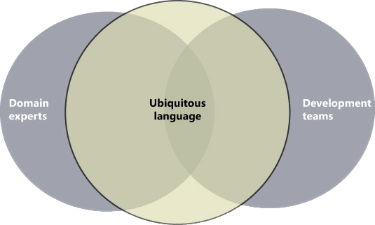

Domain Driven Design
Jefferson Mariano de Souza
Definição
- abordagem arquitetural
- forma de diminuir a complexidade do coração do sistema
- delimitar contextos
- lado mais filosófico do que técnico
forma de diminuir a complexidade do coração do sistema
- resolver o problema do negócio
- resolver a parte principal do sistema
- utiliza diversos design patterns, mas não está acoplado a nenhum
- Não se trata apenas de criar camadas, entidades, repositórios etc
- Design guiado pelo domínio (razão da aplicação existir)
História
Criado em 2003, por Eric Evans
DDD é algo mutável, pode evoluir com o passar do tempo
Quando usar?
- aplicações complexas
- sistemas que uma decisão errada pode impactar o projeto inteiro
Domínio
- o coração do negócio (razão do negócio existir)
- tem base em um conjunto de ideias, conhecimento e processos
- sem domínio, os processos auxiliares não tem muita utilidade
Para resolver o problema de negócio, não precisamos necessariamente de código
Mas sim...
Comunicação
- conseguir falar com todos os envolvidos em uma mesma linguagem
- conversar entre todas as áreas, com todos os envolvidos no problema
linguagem ubíqua
linguagem ubíqua
- é a linguagem falada no dia a dia no contexto da empresa
- utiliza as terminologias da realidade do negócio
- desenvolvedores precisam conhecer a fundo a linguagem do negócio
- objetivo: conseguir modelar o sistema para representar o negócio real
linguagem ubíqua
O que é
Cliente?
- quem loga no sistema?
- quem compra algum produto?
- quem contrata um serviço?
linguagem ubíqua
Domain Expert

Domain Expert
- quem conhece profundamente o negócio
- quem vive o dia a dia do negócio
- Com a comunicação em ordem
- Domínio bem definido
- o próximo passo é identificar subdomínios
Identificar subdomínios
Domínio é o core business, o coração do problema
Subdomínio
- subáreas do sistema que possuem complexidades e diversas regras
- refle muito em como a empresa vai funcionar
Identificar contextos da empresa
- cada contexto tem sua própria forma, sua própria linguagem
- as complexidades mudam de acordo com cada uma das áreas
Comunicação entre os contextos
- apesar de cada contexto ser delimitado, geralmente um precisa se relacionar com o outro
- identificar quais são as partes do domínio principal
- identificar quais são os domínios auxiliares
- identificar relações entre os domínios
Mapa de contexto
- mapa que detalha a relação entre os domínios
- possibilita uma visão geral do sistema
- separar os pontos de complexidade
- identificar pontos auxiliares para o sistema
- conseguir atacar o que realmente importa

Resumindo: Pilares do DDD
- linguagem ubíqua
- contextos delimitados (bounded contexts) - até onde vai a reponsabilidade de cada parte do sistema
- mapas de contexto - comunicação entre os contextos
E no código?
- Entidades
- Objetos de Valor
- Agregações
- Repositórios
- Serviços
- tudo baseado na linguagem criada antes de chegar no código
- só começa o código quando a complexidade for definida e entendida
- a maior parte do esforço vai na parte de entender a complexidade
Entidade
- algo único no sistema, com representatividade no negócio
- existe no sistema, pode mudar seu estado
- este item geralmente possui um id (que não existe por existir, mas para diferenciar um do outro)
- é um domínio rico, tem uma razão de existir
- Cada contexto tem suas próprias entidades
- Posso ter a entidade "Cliente" em mais de um contexto
- uma entidade pode aparecer em diversos contextos com nomes diferentes
Exemplo: Cadastro de usuário
Qual o tipo de dado?
- nome
- cpf
Objeto de Valor
- classe que não tem identidade única, é usada como auxiliar
- (parar de usar tipos primitivos para tudo)
- CPF -> possui validação própria
- E-Mail -> possui validação própria
Aggregates
- Relação Pedido x item
- Pedido possui N itens
- Item só existe se existir pedido
- Pedido: Raiz, por onde o processo começa
- Pedido: Root Aggregate
Repositório
- Parte responsável por persistir as entidades
- Geralmente existe apenas para o aggregate root
- Ex: eu persisto o pedido, não o item
Service
- Operação que não é uma parte natural de uma Entidade ou Objeto de Valor
- Geralmente relacionada a um conceito de domínio
- É uma operação definida em termos de outros elementos do modelo
- Geralmente é uma operação stateless